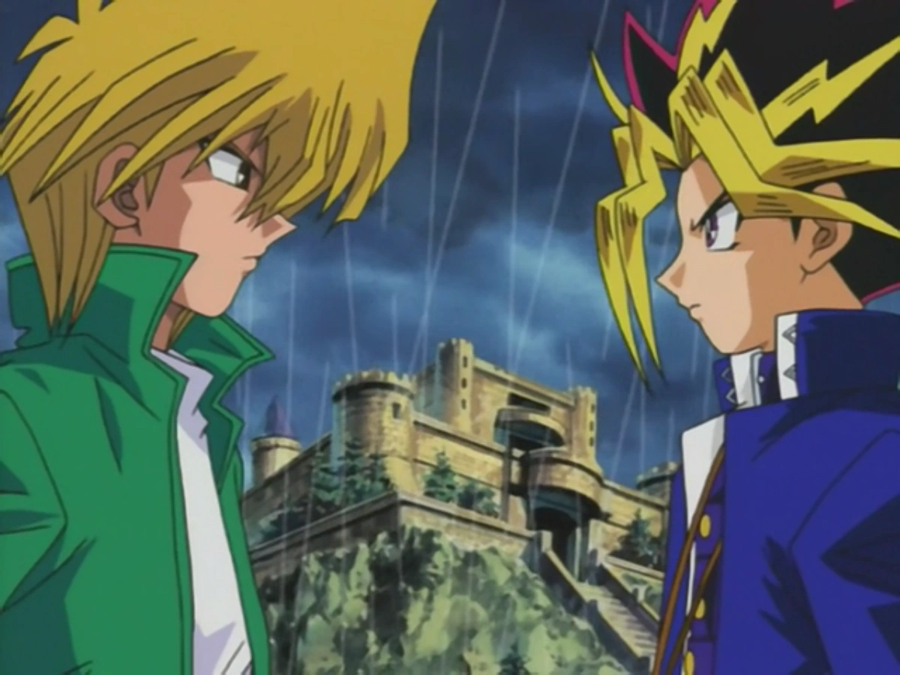
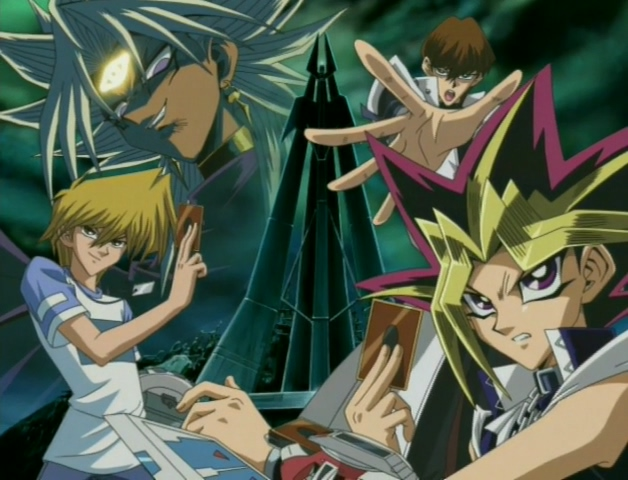
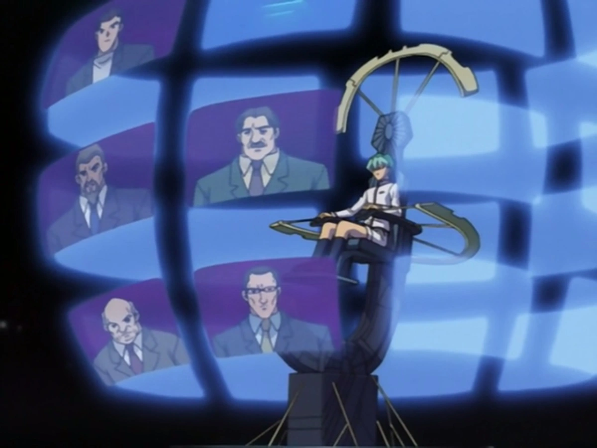
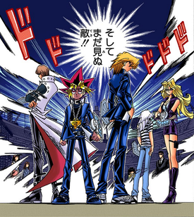
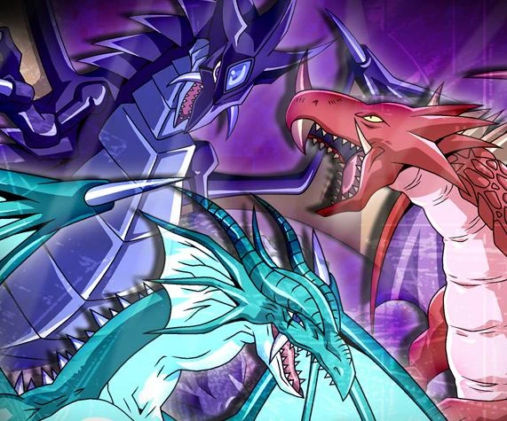
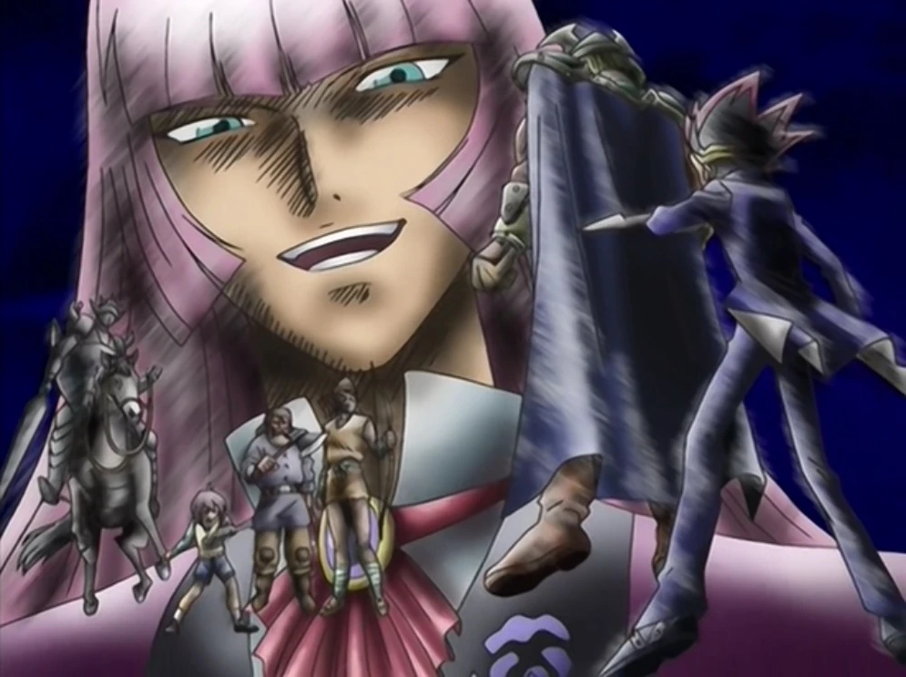
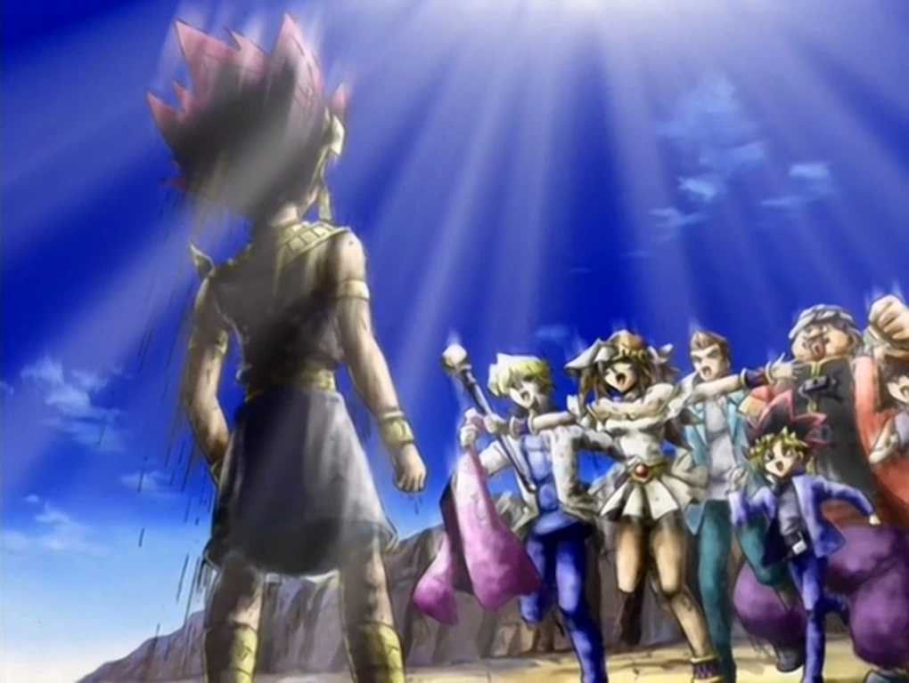

🏁 Duelist Kingdom Arc
Story: Pegasus, the creator of Duel Monsters, invites duelists to Duelist Kingdom for a tournament. Yugi joins to save his grandfather’s soul, which Pegasus has captured. With his friends’ help, Yugi defeats many duelists and wins against Pegasus using the Heart of the Cards.
- Introduction of Pegasus & Millennium Items
- Friendship theme between Yugi and his friends
- Yugi defeats Pegasus and saves his grandfather
🏙️ Battle City Arc
Summary: Seto Kaiba organizes Battle City with new duel disks. Yugi learns about the Pharaoh’s past and faces Marik Ishtar, who controls the Shadow Games. Yugi wins the tournament and saves Marik’s soul.
- Egyptian God Cards introduced
- Yugi vs. Kaiba rivalry grows
- Marik becomes the main villain
🏰 Virtual World Arc
Summary: Yugi and Kaiba are trapped in a virtual world created by the Big Five, Kaiba’s former employees. They must duel their way out. Working together, Yugi and Kaiba defeat the Big Five and escape.
- Virtual reality dueling
- Anime-only filler arc
- Cooperation between Yugi & Kaiba
🌌 Battle City Finals / Battle Ship Arc
Summary: The Battle City finals are held aboard Kaiba’s airship. The finalists—Yugi, Kaiba, Joey, and Marik—duel for the title. Yugi defeats Marik and becomes Duel King.
- Egyptian God Card showdown
- Joey’s growth as a duelist
- Yugi saves Marik from his dark side
🧙♂️ Orichalcos Arc
Summary: Dartz leads a mysterious group using the Seal of Orichalcos to revive an ancient evil. Yugi, Atem, and friends fight to stop him, risking their souls. In the end, they defeat Dartz and restore peace.
- The Seal of Orichalcos’ dark power
- Yugi’s emotional struggle
- Teamwork and redemption
🏆 KC Grand Championship Arc
Summary: Kaiba hosts a worldwide duel competition. Yugi faces skilled opponents and ultimately duels Leon, who uses fairy-tale cards. Yugi wins and becomes world champion.
- Global dueling event
- Anime-exclusive filler
- Themes of friendship and sportsmanship
🏺 Pharaoh’s Memory / Millennium World Arc
Summary: Yugi and friends journey into the Pharaoh’s ancient memories to uncover his name and battle Zorc, the ultimate darkness. After saving the world, Yugi duels Atem one last time—Yugi wins, and the Pharaoh’s spirit rests in peace.
- Reveals Pharaoh Atem’s true past
- Final duel between Yugi & Atem
- Touching ending and farewell